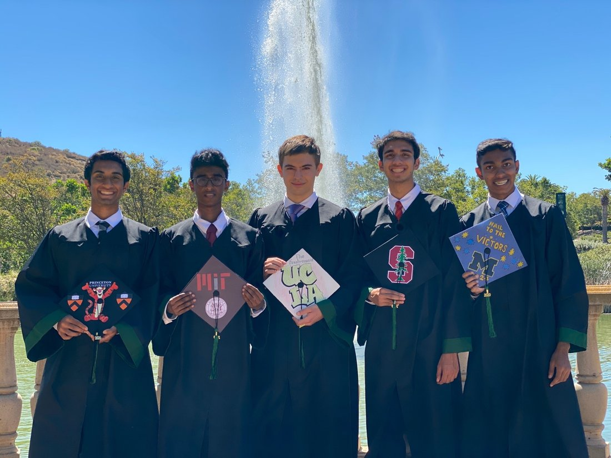
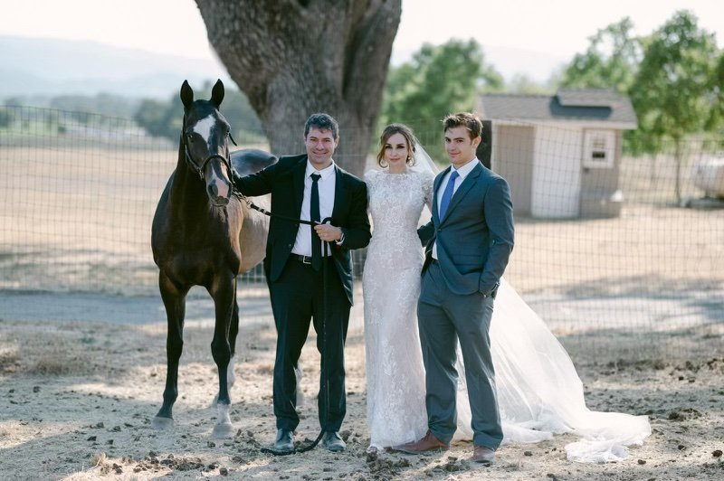

Martin Bourdev
I'm an antibody and peptide process engineer at Amgen.
I grew up in San Jose and Mountain View and live in Los Angeles. At UCLA, I managed the budget for the Alpha Epsilon Pi Fraternity, led a project for the CruX neurotechnology club, and brewed beer at the Abramson Lab.
I like neurotechnology, Muay Thai, and reading. I have a neurotechnology blog called Efferent.
You can find me on Twitter, LinkedIn, and GitHub. My email is martin.bourdev@gmail.com.

